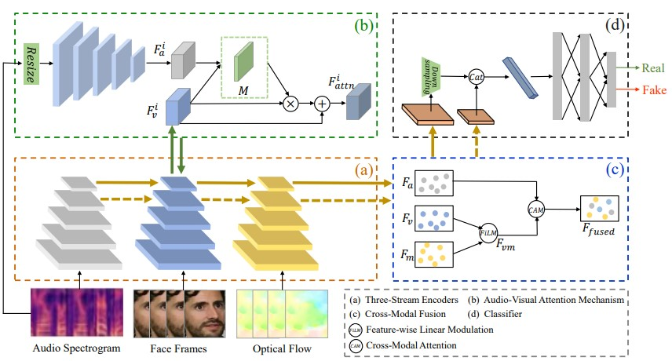
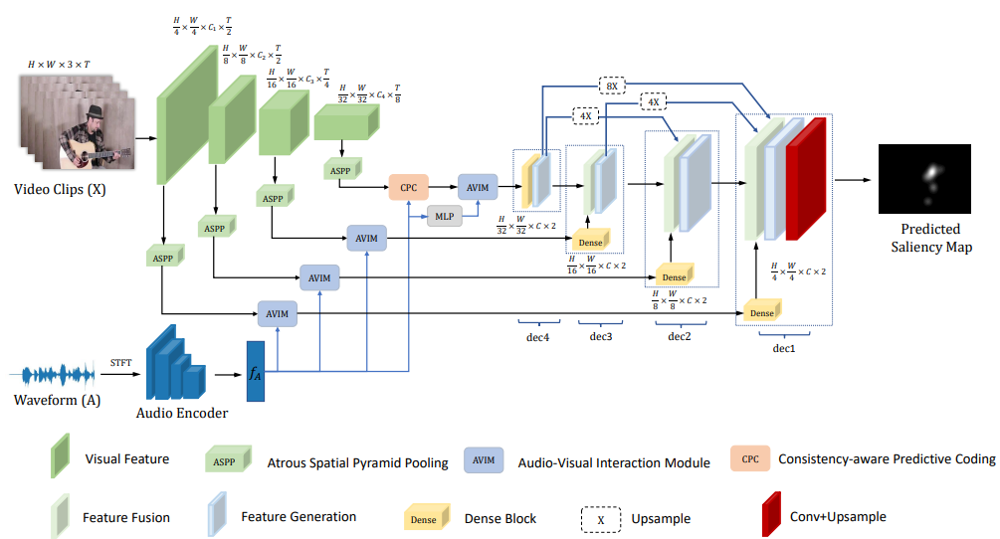
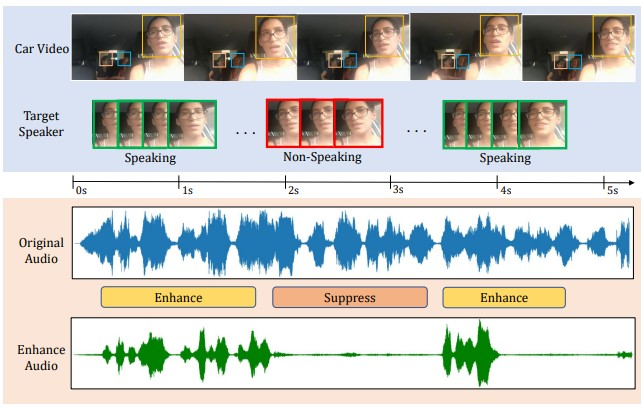
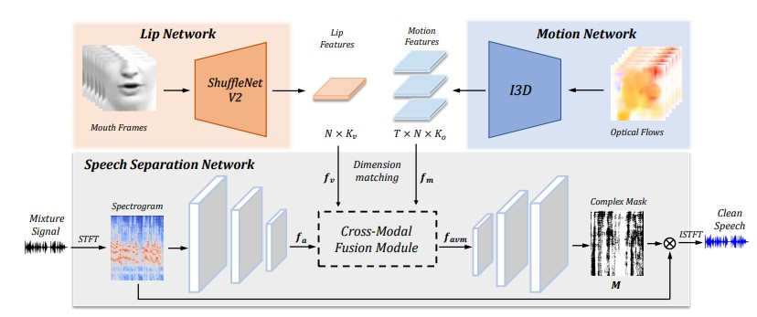

|
Junwen Xiong
Hi, I am Junwen Xiong (熊俊文),
a first-year Ph.D. student in the Department of Computer Science
at Northwestern Polytechnical University, advised by Prof.
Peng Zhang.
I'm broadly interested in multimodal
learning (images, audio, video, etc.).
My recent research lies in audio-visual
speech separation, sound source
localization.
Email
|
Google
Scholar |
Github
|
|
- [Feb. 2023] One paper about audio-visual saliency prediction is accepted to CVPR'23.
- [Aug. 2022] One paper about multi-modal correlation learning is accepted by TMM'22.
- [June. 2022] Spent a wonderful summer
interning at Horizon Robotics, working
in multimodal
speech team.
|

|
FTFDNet: Learning to Detect Talking Face Video Manipulation with Tri-Modality Interaction
Ganglai Wang, Peng Zhang, Junwen Xiong, Feihan Yang, Wei Huang, Yufei Zha
submitted to TCSVT, 2023
[paper]
Incorporating three modalities to detect talking face video manipulation
|
|

|
CASP-Net: Rethinking Video Saliency
Prediction from an Audio-Visual
Consistency Perceptual Perspective
Junwen Xiong,
Ganglai Wang, Peng Zhang, Wei Huang,
Yufei Zha, Guangtao Zhai
CVPR, 2023
[paper]
[webpage]
Audio-visual consistency perception matters
|
|

|
Look&Listen: Multi-Modal Correlation
Learning for Active Speaker Detection
and Speech Enhancement
Junwen Xiong,
Yu Zhou, Peng Zhang, Lei Xie, Wei Huang,
Yufei Zha
TMM, 2022
[paper]
[webpage]
Unified correlation learning framework to solve two audio-visual tasks
|
|

|
Audio-visual speech separation based
on joint feature representation with
cross-modal attention
Junwen Xiong,
Peng Zhang, Lei Xie, Wei Huang, Yufei
Zha, Yanning Zhang
arXiv preprint, 2022
[paper]
Novel fusion methods for audio, video and optical flow modalities
|
|
{kind=link}